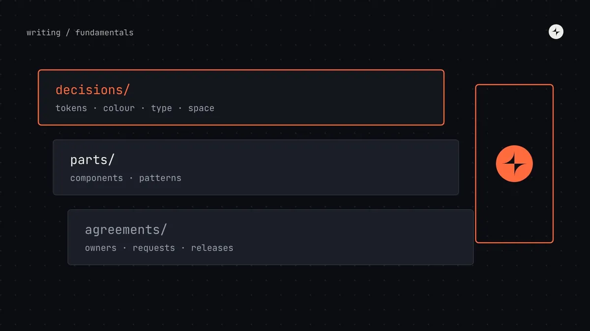

What is a design system? A plain-English guide for product teams
A design system is the set of decisions, parts and agreements a company uses to build its product's interface the same way every time. Here's what that means in practice, what's inside one, and how to tell whether you need one.

In this article
- What is a design system?
- The five-button problem
- What's inside a design system
- Design system vs style guide, UI kit and component library
- Examples of design systems
- Why a design system is worth having
- Who builds and runs a design system?
- Do you need a design system?
- How to start a design system
- Common misconceptions
- The short version
- Frequently asked questions
- Further reading
The short answer
A design system is the set of shared decisions, reusable parts and working agreements a company uses to design and build its product's interface consistently. The decisions are things like colours, type and spacing, stored as design tokens. The parts are components such as buttons, inputs and dialogs, in Figma and in code. The agreements are how people use, change and contribute to all of it.
- A UI kit or component library is part of a design system, not the whole thing.
- The value comes from deciding things once, so teams stop re-solving the same problems.
- Most teams don't need a full system on day one. They need named foundations, then components, then process, in that order.
What is a design system?
Here's the definition we use, because it's the one that survives contact with real teams:
A design system is a company's shared decisions, reusable parts and working agreements for building its product interfaces.
Each of those three words carries weight.
What we've agreed
Our blue is this exact blue. Body text is 16px. Spacing goes up in steps of 4. Errors are always red, written in plain words, and say how to fix the problem.
What we've built
Design tokens, Figma components and coded components that already carry those decisions, so nobody has to remember them.
How we work
Who owns the system, how teams ask for changes, how new parts get in, how releases are announced and how old parts are retired.
Most definitions you'll find stop at the second word: "a library of reusable components". That's the visible part, and it's the easiest to buy or copy. It's also why so many design systems end up as expensive component libraries nobody trusts. Without the decisions underneath, the components drift. Without the agreements around them, nobody knows how to change them, so teams fork them and the system quietly dies.
The five-button problem
The easiest way to understand why design systems exist is to watch what happens without one.
An illustration we see in almost every audit
A product grows from one team to five. Each team needs a primary button, so each designs and builds one. Nobody is being careless: they're shipping on deadline.
A year later there are five primary buttons with slightly different blues, heights, corner radii and hover states. A rebrand means changing all five, in five codebases. Two of them fail contrast checks. Users notice that the product feels stitched together.
One button, built once, with its states, accessibility and behaviour decided. Every team uses it. The rebrand changes one token and the new blue reaches every screen in a release.
Multiply that by every input, dropdown, table, date picker and error message in a product, and you get the real problem design systems solve. It isn't "our UI looks a bit inconsistent". It's that a growing company is paying, again and again, to make the same decisions, and the cost grows faster than the team does.
Design debt is the accumulated cost of inconsistent, duplicated interface decisions: every extra button variant, one-off colour and slightly different form layout that someone will eventually have to maintain, test, fix or migrate.
What's inside a design system
A complete design system has layers. Each one depends on the layer below it, which is why the order you build them in matters.
color.action.primary, space.4Principles
Three to five short statements about what the product values. Good principles help people make decisions when the system doesn't have an answer yet. "Clarity over cleverness" tells a designer what to do with a tempting animation; "be delightful" doesn't.
Foundations
The basic visual decisions every screen relies on: colour, typography, spacing, layout, corner radius, elevation, motion and iconography. Get these right and components almost design themselves. Get them wrong and every component inherits the problem. A low-contrast grey in the foundations becomes low-contrast text in every component that uses it.
Design tokens
Design tokens are those foundation decisions given names and stored in one place, in a format both design tools and code can read. Instead of #CC3C00 scattered across a codebase, there's one token, color.action.primary, that points to it. Change the token and every button, link and focus ring that uses it updates together. Tokens are also what make dark mode and multiple brands possible without redesigning anything.
Components
The reusable building blocks people picture when they hear "design system". A good component isn't just a drawing: it has every state designed (default, hover, focus, pressed, disabled, loading, error), it works with a keyboard and a screen reader, and it exists in Figma and in code with the same name and the same options.
Patterns
Components are words; patterns are sentences. A pattern describes how components combine to solve a recurring problem: how a form validates, how a table filters, how a page explains that it's empty. Patterns are where most of the real consistency in a product comes from, and they're usually the part teams skip.
Documentation
If people can't find a component, or can't work out how to use it, it doesn't exist. Documentation is the shop window: what each part is for, when to use it and when not to, with live examples and code. We've written a whole guide on what good design system documentation includes.
People and process
The layer most teams forget, and the one that decides whether the system lasts. Who owns it? How do teams ask for a new component? Who can say no? How are breaking changes announced? This is the operating model, and in our experience it matters more than the quality of the components.
Design system vs style guide, UI kit and component library
These four terms get used interchangeably, but they describe different things. Each one is a smaller part of the one before it.
| Term | What it contains | Lives in | Who uses it |
|---|---|---|---|
| Design system | Everything below, plus principles, patterns, docs and the process for running it | Figma, code, docs site, team rituals | Everyone who builds the product |
| Component library | Coded, reusable UI components | A code package (npm, Swift, Kotlin) | Engineers |
| UI kit | Reusable components drawn in a design tool | A Figma or Sketch library | Designers |
| Style guide | Rules for brand and visual style: logo, colour, type, tone | A PDF or a web page | Designers, marketing, writers |
The short version: a UI kit and a component library are the parts of a design system, one for designers and one for engineers. A style guide records some of the decisions. A design system includes all of them and adds the agreements that keep them in sync. We go deeper, with a diagram and a self-check, in design system vs style guide vs component library vs UI kit.
Examples of design systems
Some of the best-known design systems are public, and they're worth studying. Not to copy, but to see how different companies make different trade-offs.
Material Design 3
A design system built to be used by other companies as well as Google. Strong on colour roles: tonal palettes generated from a single source colour, mapped to named roles like primary and on-primary.
Carbon
Open source and built for dense enterprise software. Worth studying for its 2x grid, its separate type sets for product screens and for marketing, and its four themes.
Polaris
The system behind the Shopify admin, also used by third-party developers building apps for merchants. Good example of content and voice guidance living next to components.
GOV.UK Design System
Perhaps the clearest public example of patterns and governance: every component is backed by research, and there are published criteria for what gets in.
Notice that none of these are "just" component libraries. Each publishes principles, foundations, patterns and some form of contribution or governance process. That's what makes them systems.
Why a design system is worth having
The value of a design system comes from three things, which we call decide once, build once and change once.
The blue, the button height and the error message format are settled. Designers and engineers stop debating them in every project, and reviewers stop catching the same problems.
Each component is designed, coded, tested for accessibility and documented one time, then reused everywhere. Product teams spend their time on the product.
A rebrand, a new theme or an accessibility fix is made in one place and reaches every product that uses the system in a single release.
There's real evidence behind this, though less than the marketing suggests. Here's what's actually been measured, with the caveats that matter:
Two honest points about those numbers. First, they come from best-case tasks: building a known form with a known library. Real gains across a whole team are smaller, because not all work is UI work and not all UI work uses the system. Second, the speed-up only arrives if people actually use the system, which is why adoption matters as much as quality. We built a transparent model for this, with break-even points by team size, in design system ROI: an honest model.
The benefits that don't show up in a speed study are often bigger: a product that feels like one product, accessibility that's fixed at the source, faster onboarding for new designers and engineers, and a shared vocabulary that makes cross-team work less painful.
Who builds and runs a design system?
It depends on the size of the company, and it should change as the company grows. A rough guide:
| Company size | Typical setup | What the system looks like |
|---|---|---|
| Startup (10–50 people) | No dedicated team. One designer and one engineer own it, about a day a week each. | Named tokens in code, a themed open-source component library, a small Figma library. |
| Scale-up (50–300) | A small central team of 1–3 people, plus a champion in each product squad. | Tokens, 20–35 components, a docs site, versioned releases, a simple request process. |
| Enterprise (1,000+) | A dedicated team of 8–20 with product management, engineering per platform, accessibility and enablement. | Multi-brand, multi-platform, with formal governance, a contribution model and support rota. |
Two rules hold at every size. Aim for at least as much engineering capacity as design capacity, because adoption happens in code. And protect the time: "a bit of everyone's time" turns into nobody's time the first week a deadline slips. We go deeper in design system team structure and the design system operating model.
Do you need a design system?
Not always, and not all at once. A design system is a response to scale: more people, more products, more platforms, more brands. If you have one designer, four engineers and one product that changes every week, a full system will slow you down.
What almost every team does need, from early on, is the cheapest layer: foundations named as tokens and used in code. It costs days, survives every pivot, and makes everything you build later easier. Components come when the same piece of UI is needed by two teams. Formal process comes when there are more teams than one person can talk to.
We wrote a full decision guide, with seven questions and a readiness checklist, in do you need a design system?
How to start a design system
If you've decided you need one, the order matters more than the tools. The short version of our step-by-step guide:
Audit what you have
Screenshot and count every button, input, colour and text style in the product. The numbers make the case for you, and show you where to start. See how to run a design system audit.
Name the foundations as tokens
Colour, type, spacing and radius, agreed and stored as design tokens in both Figma and code.
Build the components teams need next
Pick from real roadmaps, not a wish list. Build each one with a product team that needs it, in design and code together.
Document as you go, and agree how it's run
A page per component, a single front door for requests, and a named owner who can make decisions.
Common misconceptions
"A design system is a Figma library"
A Figma library is a UI kit. If the same components don't exist in code with the same names and options, designers and engineers are working from two different systems.
"It's a project with an end date"
It's a product that serves other products. It needs owners, a roadmap and maintenance for as long as the products using it exist.
"It will make every screen look the same"
It makes the decided things the same, so teams can spend their creativity on the things that should differ: the product itself.
"We'll adopt Material and be done"
An open-source system is a great starting point for components. You still need your own tokens, patterns, documentation and process on top.
The short version
- A design system is decisions, parts and agreements: tokens, components and the process for using and changing them.
- It exists to stop growing teams paying to make the same decisions again and again: decide once, build once, change once.
- It has layers. Principles, foundations and tokens come first; components, patterns and docs build on them; people and process keep it alive.
- A UI kit, a component library and a style guide are parts of a design system, not substitutes for one.
- Start small: tokens first, components when two teams need them, process when there are more teams than one person can talk to.
Frequently asked questions
Is a design system the same as a component library?
No. A component library is the coded set of reusable components, and it's one part of a design system. The system also includes the decisions underneath (foundations and tokens), the design-tool library, patterns, documentation, and the process for owning and changing it all.
Who owns a design system?
Ideally a named design system lead, with design and engineering capacity behind them. In small companies that's often one designer and one engineer with protected time. Ownership means being accountable for quality and for decisions, not being the only people allowed to make changes.
How long does it take to build a design system?
A useful first version, with tokens and the 10–15 most-used components in design and code, typically takes three to six months for a small team. But a design system is never finished: it keeps growing and changing with the products it serves.
Is Figma a design system?
Figma is a tool. A Figma library of components is a UI kit, which is one part of a design system. You also need the same components in code, plus tokens, documentation and a process.
What are the main parts of a design system?
Principles, foundations (colour, type, spacing, layout), design tokens, components, patterns, documentation, and the people and process that run it.
Can a small startup have a design system?
A light one, yes. Name your foundations as tokens, theme an open-source component library with them, and agree one simple habit: check whether something exists before building it. Save the heavier process for when you have several teams.
Further reading
- Atomic DesignBrad Frost. The book that gave many teams a shared vocabulary for components and patterns.
- A Design System isn't a Project. It's a Product, Serving Products.Nathan Curtis, EightShapes. Why systems need owners and roadmaps.
- Measuring the value of design systemsFigma. The source of the 34% figure, and how it was measured.
- The WebAIM Million, 2025WebAIM. The annual accessibility scan of the top million home pages.
- CARS24: LEGO, a component system teams chose to build withA case study of a component system built and adopted in three countries.